Every picture here comes from one call to
scripts/calibration/plot.py. Sources: testdata/calibration/records.tsv, testdata/calibration/hbm.tsv
The record's three-level tuple, drawn as three levels. Width is device time; a level's children sum to it. One real execution — the one whose total is the median — because per-call medians give a picture belonging to no execution.
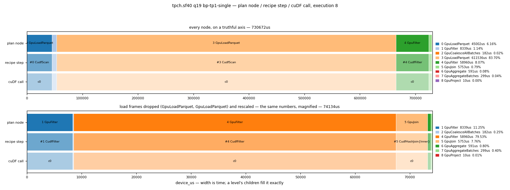
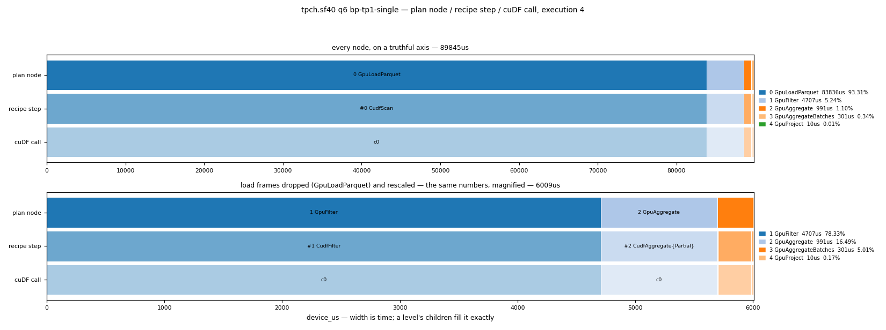
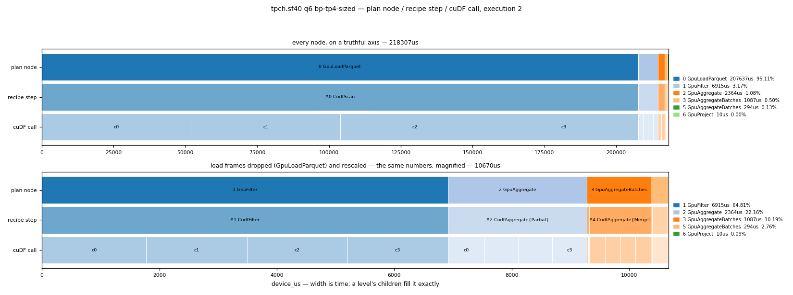
Left: device time per plan node. Right: the three time terms side by side, NEVER summed — under CUDA events the host submission interval contains the device one, so adding them describes no interval.
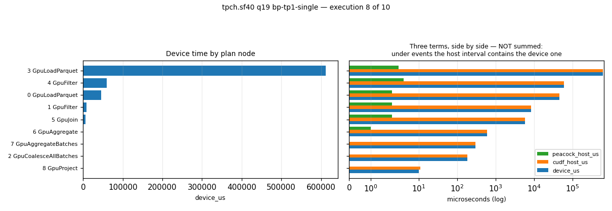
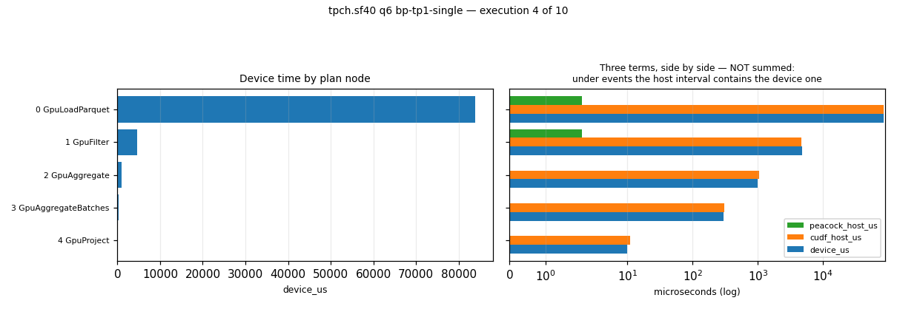
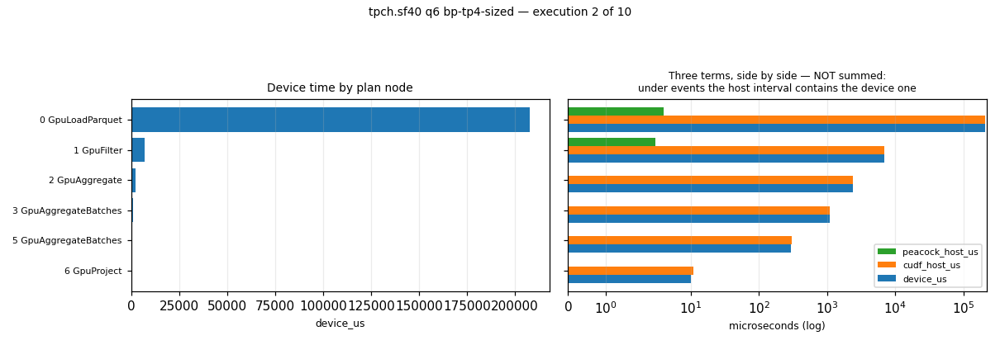
read_parquet: decompression, page decode, PCIe. Kept apart from compute on purpose: one axis holding both draws a picture about two different machines.
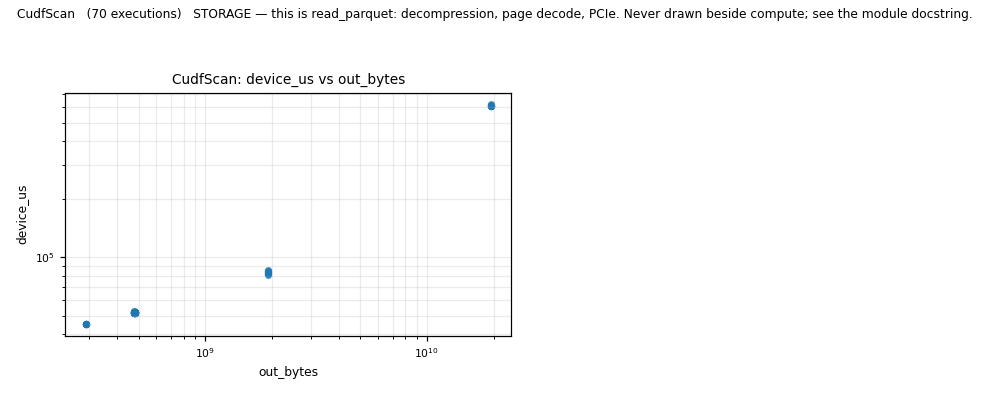
Arithmetic over resident columns. Log-log, because a cost proportional to bytes is a straight line of slope 1 whatever the constant is — so the eye checks the shape without knowing it.
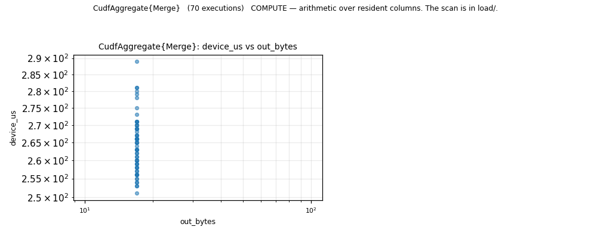
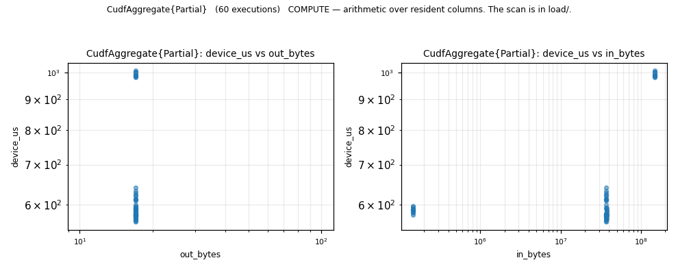
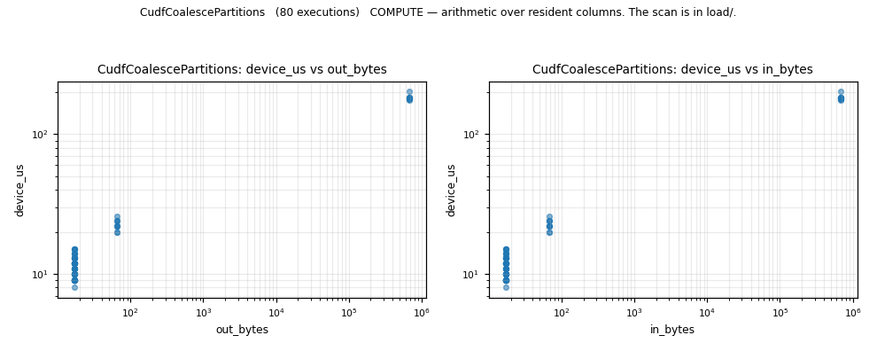
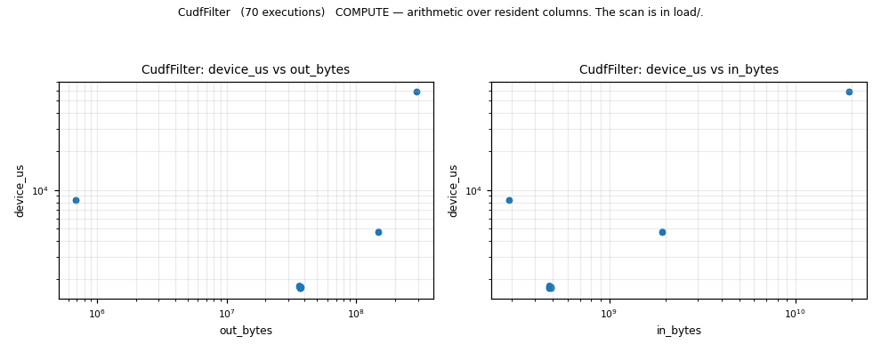
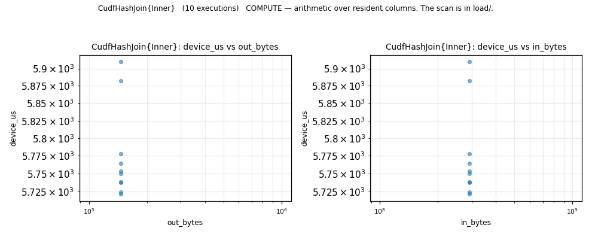
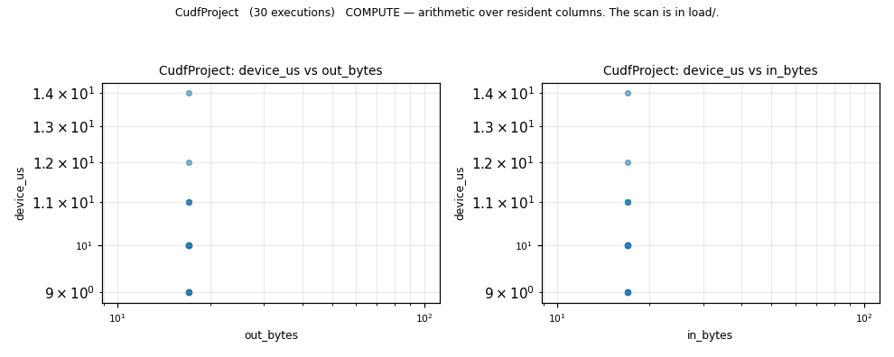
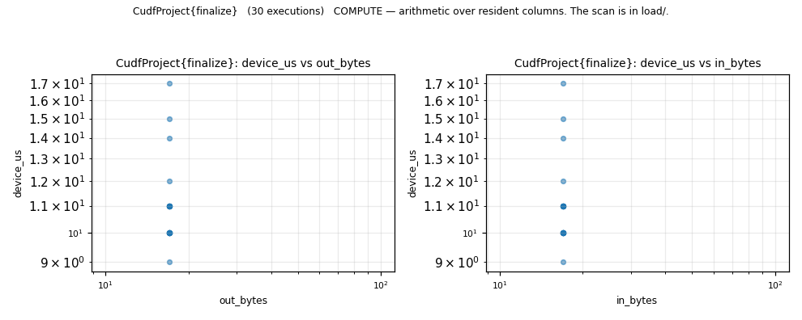
Each execution's device_us as a ratio to its own call's median. A kind with a long tail is one whose median stands for scheduling noise.
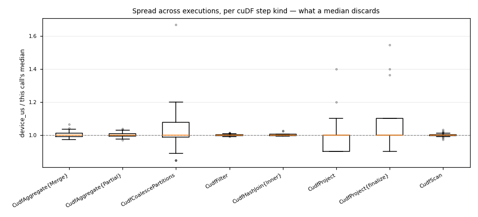
Times from a clean run, traffic from a capture under GPU memory counters, joined on the tuple. The counters cost the query ~7%, which is why they are two runs.
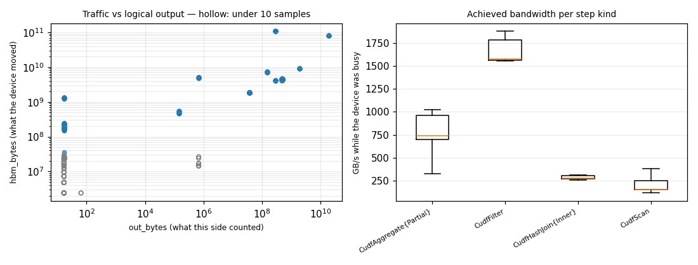